pose6d — User Guide
pose6d finds objects in a camera image and reports their full 6D pose (position and orientation) so a robot arm can pick them. You teach it a new object by labeling a few images, it trains a keypoint-detection network, and from then on it detects every instance of that object live and streams the poses to the robot over TCP/IP.
bricks-15. Each red/green/blue
axis is one estimated 6D pose.Getting started
Launching the app
The same application runs in three ways:
| How | Command | Use it for |
|---|---|---|
| From source | python main_app.py from the pose6d folder, with the project
environment activated (on the development PC: C:\Work\Envs\qtgui) | Development, labeling, training |
| Deployed exe | pose6d.exe (built by main_app_deploy.py; entry point
main_app_wrapper.py) | Production PCs next to the robot |
| Web interface | python -m webapp, then open http://127.0.0.1:5000/ |
Quick detection tests and remote viewing. No labeling or training. |
Installing from source (Windows):
python -m venv C:\Work\Envs\qtgui
C:\Work\Envs\qtgui\Scripts\activate.bat
pip install torch torchvision # or the CUDA build: --index-url https://download.pytorch.org/whl/cu118
pip install -r requirements.txtpyrealsense2 is only needed for Intel RealSense cameras (D435 / D455 / D580 are
the tested models). A plain USB webcam works without it.Source mode vs deployed mode
The application detects at startup whether it runs from source or deployed (pose6d.exe, or the
Cython-compiled modules in pose6d_deploy) and behaves slightly differently:
| Behaviour | Source | Deployed |
|---|---|---|
| License check at startup | Skipped | Checked. See License. |
| Console log | Everything (DEBUG and up) | Warnings and errors only |
| Log file | None | logs\pose6d.log next to the exe (INFO and up, 5 MB × 4 files).
If that folder is not writable: %LOCALAPPDATA%\pose6d\logs. |
| Validation debug overlays | Shown | Show Heatmap and Show Joints are hidden |
Two environment variables override this, for testing or support:
| Variable | Values | Effect |
|---|---|---|
POSE6D_DEPLOY_MODE | frozen · cython · source | Forces the mode instead of detecting it |
POSE6D_LOG_DIR | a folder path | Writes the deployed log file there instead |
Layout & navigation
The main window is a row of tabs. They follow the order you normally work in:
| Tab | Purpose |
|---|---|
| 📈 Workflow | Step-by-step overview; create or select the object, basic camera/robot/communication choices |
| 📷 Camera Setup | Connect the camera, capture images, calibrate the camera lens (intrinsics) |
| 🖊️ Object Teaching | Label keypoints on images and train the detection model |
| 🔍 Validation | Run the trained model on a camera, an image, a folder or a video; publish results to the robot |
| 📐 Robot Setup | Hand-eye calibration between camera and robot |
| 📡 Communication | Robot server and a test client, with a live monitor of every packet |
| ⚙️ Settings | Edit the active object's object_config.json in a form |
| 📊 Results & Logs | Results list (placeholder for now) |
| 🔑 License | License status and activation |
Where data lives
Everything that belongs to one object lives in one object folder, by default under data\objects\:
data\objects\bricks-15\
object_config.json ← the object's settings: keypoints, camera, detection (see reference)
images\ ← captured images, plus one <image>.json label file next to each labeled image
models\ ← trained checkpoints keypoint_group_model_NNNN.pth
cameras\ ← calibration.json (camera intrinsics)
results\ ← benchmark / evaluation output
labels\ ← reserved
robots\ ← reservedApplication-wide state that is not tied to an object is kept in main_app_config.json in the
pose6d folder: the last selected object, the default camera type, communication addresses. It is
machine-local, created on first run, and never shipped.
Concepts & vocabulary
| Term | Meaning |
|---|---|
| Object | One kind of part the robot should pick, for example a wooden brick. Stored as an object folder. |
| Keypoint / target point | A named, distinctive point on the object (a corner, an edge midpoint) with known 3D coordinates in
millimetres in the object's own coordinate frame. bricks-15 has 13: corners t1–t4 (top), b1–b4
(bottom), edge midpoints c12 c23 c34 c14 and the top centre tc. |
| Object Id (instance) | Several copies of the same object can appear in one image. Each copy gets its own id (1, 2, 3 …) when labeling, and detection reports one result per instance. |
| Label | The pixel position of a keypoint on one image, saved in <image>.json. |
| Model | The trained keypoint network, models\keypoint_group_model_NNNN.pth (NNNN = epoch). The highest number is
used for detection and for further training. |
| Pose | Where the object is relative to the camera: tvec = translation (x, y, z) in millimetres, rvec = rotation as a Rodrigues rotation vector in radians (axis × angle). Computed with PnP from the detected keypoints and their 3D coordinates. |
| Quality | 0–1 score of how well the detected keypoints fit the object model. Closer to 1 is a tighter fit; good detections of the sample object score about 0.97–0.99. |
| Intrinsics | The camera's lens parameters (focal lengths, image centre, distortion), found by camera calibration. Needed for correct poses. |
| Hand-eye calibration | Finding where the camera sits relative to the robot flange (camera on the arm), so poses can be converted into robot coordinates. |
📈 Workflow
A checklist of the whole process. The left column shows the seven steps (green = done, blue = current); the right side shows the current step's description and, for some steps, its controls. Move with Previous Step / Next Step at the bottom. Steps 4 and 7 have no controls of their own; use the Validation and Results tabs.
Step 1 · Initialize Project
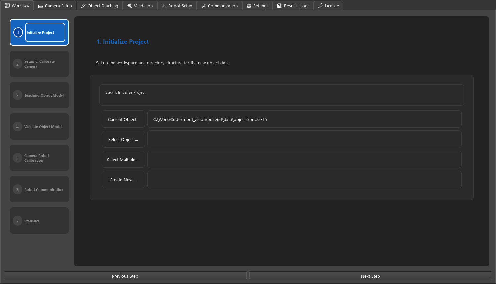
| Control | What it does |
|---|---|
| Current Object | Path of the active object folder. Every tab works on this object. Restored from the previous session at startup. |
| Select Object … | Folder picker. Choose an existing object folder; it becomes the active object for all tabs. |
| Create New … | Opens the Create New Object dialog (below) and creates a new object folder. |
| Select Multiple … | Intended for working with several objects at once. Currently opens the same Create New Object dialog (see known limitations). |
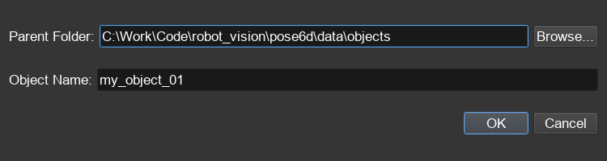
data\objects, Browse… to change) and Object Name.OK creates <parent>\<name>\ with the standard sub-folders and a default
object_config.json, and makes it the active object.
A1–A8, TC) as
its keypoints, not your real object. Rename points and set their real coordinates in Object Teaching
(double-click a target point). To change the number of points or the faces used by Show Shape, edit
point_names / point_coord / point_faces in the Settings tab before you start labeling.Step 2 · Setup & Calibrate Camera
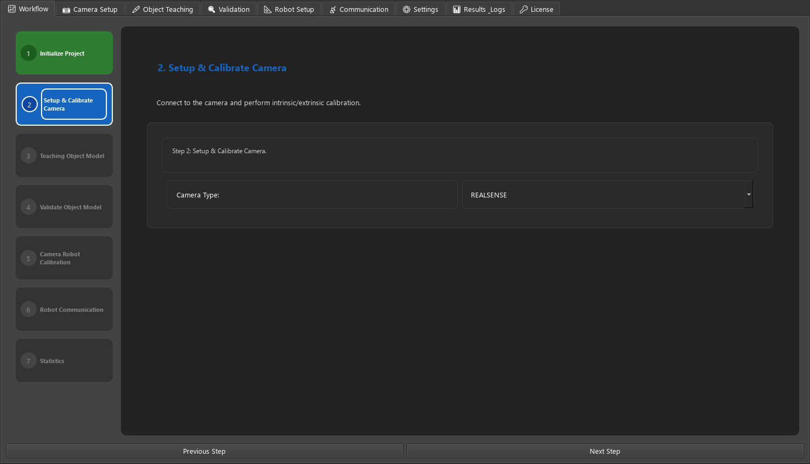
| Control | What it does |
|---|---|
| Camera Type | Default camera type in main_app_config.json (camera_type). The camera that is actually opened is set per object
in Camera Setup, so the two can differ. |
Step 3 · Teaching Object Model
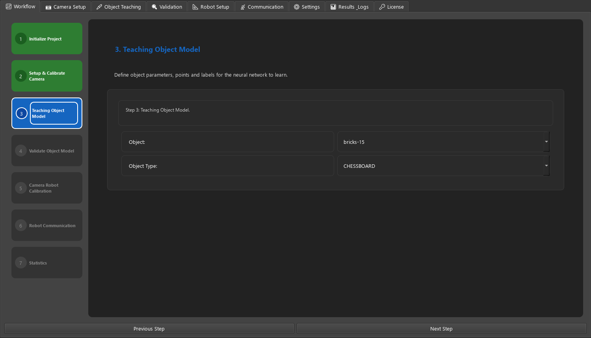
| Control | What it does |
|---|---|
| Object | Every valid object folder under the objects directory. Picking one makes it the active object (same as Select Object). |
| Object Type | Kind of object model: CHESSBOARD, BOX, KEYPOINT, POSE, SKELETON. Written to the object's
object_config.json immediately. Trained keypoint objects such as bricks-15 use POSE; only this type
produces 6D poses for the robot. |
Step 5 · Camera Robot Calibration
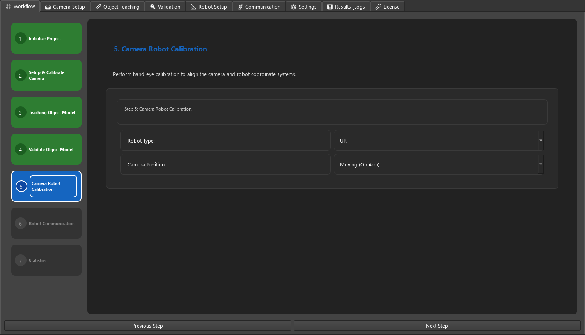
| Control | Values | What it does |
|---|---|---|
| Robot Type | UR KUKA TM ABB FANUC YASKAWA DENSO DOBOT OTHER | Robot brand, stored as robot_type in main_app_config.json |
| Camera Position | Moving (On Arm) · Static | Camera mounted on the robot arm or fixed in the cell, stored as camera_position |
The calibration itself runs in Robot Setup.
Step 6 · Robot Communication
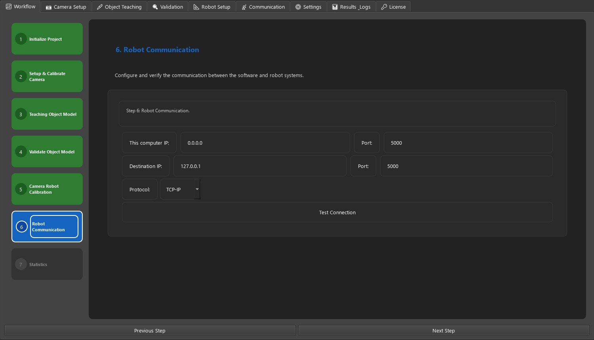
| Control | Default | What it does |
|---|---|---|
| This computer IP / Port | 0.0.0.0 / 5000 | Local address, saved as local_ip / local_port |
| Destination IP / Port | 127.0.0.1 / 5000 | Robot controller address, saved as remote_ip / remote_port |
| Protocol | TCP-IP | TCP-IP or MODBUS |
| Test Connection | Saves the fields, then tries a TCP connection to the destination for 2 s. The button turns Connection OK (green) or Connection Failed (red). MODBUS testing is not implemented and always reports failure. |
127.0.0.1:5005).📷 Camera Setup
Connect the camera, look at the live image, capture images for labeling, and calibrate the camera lens.
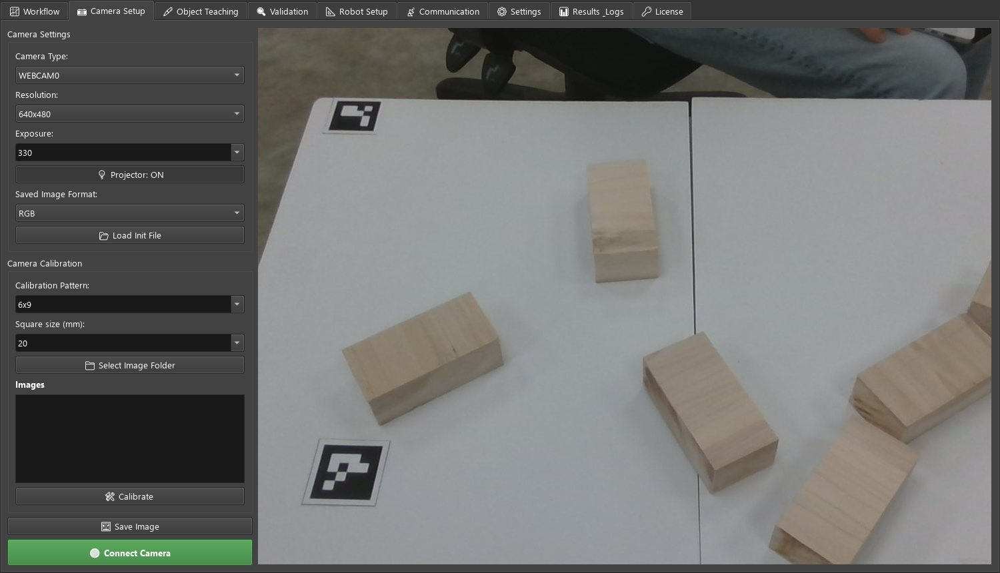
Camera Settings
| Control | Values | What it does / guidance |
|---|---|---|
| Camera Type | REALSENSE WEBCAM0 WEBCAM1 BASLER IDS FLIR DALSA GENICAM OTHER | Camera driver to use. RealSense, webcam and Basler have their
own drivers; the other entries currently open through the generic webcam (OpenCV) driver. Stored per object in
camera_parameters.camera_type. |
| Resolution | 1280x720 · 640x480 · 640x360 | Requested capture size. Higher is more detail but slower detection. Calibrate the camera again after changing it, because the intrinsics depend on the resolution. |
| Exposure | 330 100 200 500 1000 2000 5000, or type a value | Exposure in the camera's own units, applied immediately while connected. Lower it if moving parts look blurred; raise it in a dark cell. |
| 💡 Projector: ON/OFF | RealSense IR dot projector. Turn it off if the dot pattern is visible in the images you label. | |
| Saved Image Format | RGB Left Right Depth RGD LRD All | Which stream(s) Save Image writes. Use RGB for labeling. Left/Right/Depth need a RealSense camera. |
| 📂 Load Init File | Opens a file dialog for an .ini settings file. Loading is not implemented yet. |
Capturing images
- Select the object first (Workflow, step 1). Images are saved into that object's folder.
- Set Camera Type, Resolution and Exposure, then click 🟢 Connect Camera. The live image appears on the right and the button turns red (🔴 Disconnect Camera).
- Click 🖼️ Save Image for each view. Move the objects and the camera between shots: different positions, angles, lighting and partial occlusions make a more robust model.
Images are saved as <format>_YYYYMMDD_HHMMSS.png (for example rgb_20261028_141502.png) in the
object's images\ folder, or in the folder chosen with Select Image Folder in the calibration panel if you picked one.
bricks-15 was trained from 14 labeled images with several bricks each. Start with 10–20 varied images and
add more where detection is weak.Camera Calibration
Computes the camera intrinsics from photos of a printed chessboard (doc\checkerboard_pattern.pdf).
| Control | Values | Meaning / guidance |
|---|---|---|
| Calibration Pattern | 6x9 7x10 4x11 5x5, or type NxM | Number of inner corners of the chessboard (columns × rows), not squares. |
| Square size (mm) | 10 20 30 50 100 200 300, or type a value | Side of one printed square, measured on the print. It sets the scale of the calibration. |
| 📁 Select Image Folder | Folder with the chessboard photos; they are listed under Images. Click one to view it. | |
| 🛠️ Calibrate | Runs the calibration on every image in the folder. |
object_config.json and to cameras\calibration.json, which detection reads.Take 15–25 photos with the board filling different parts of the image and tilted at different angles. An invalid pattern or square size shows Bad Pattern / Bad Square Size; too few usable images show Calibration Failed.
🖊️ Object Teaching
Mark where each keypoint is on your images, check the labels with overlays, and train the model.
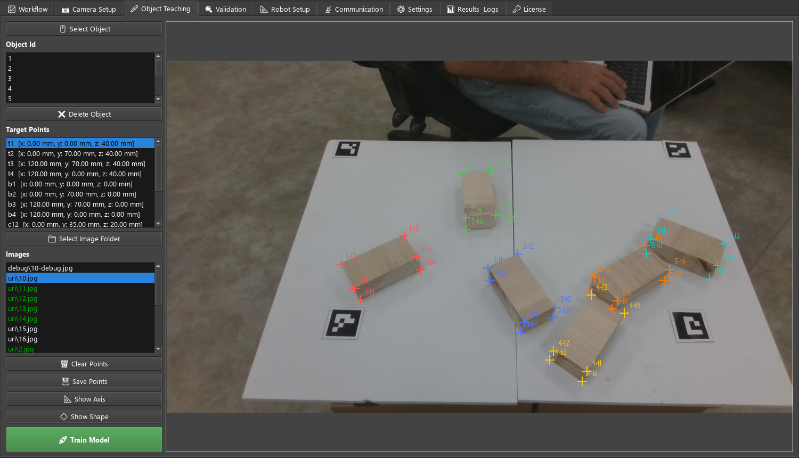
Controls
| Control | What it does |
|---|---|
| 🖱️ Select Object | Switches to another object folder. Shows Invalid Object if the folder has no valid object_config.json. |
| Object Id | Instance number 1–20 you are labeling. Each instance is drawn in its own color. Label every visible copy of the object in an image with a different id. |
| ❌ Delete Object | Removes all points of the selected Object Id from the current image. |
| Target Points | The object's keypoints with their 3D coordinates in mm. The selected point is the one the next click places. Double-click a point to rename it or change its X/Y/Z. That changes the object model for all images, not the label on this image. |
| 📁 Select Image Folder | Folder whose images appear in the Images list (default: the object's images\). |
| Images | Click to load. Labeled images (with a saved .json) are shown in green. |
| 🗑️ Clear Points | Removes all points from the current image (not saved until Save Points). |
| 💾 Save Points | Writes the points to <image>.json next to the image and turns the image green. |
| 📐 Show Axis | Computes each instance's pose from the labels and draws its coordinate axis (X red, Y green, Z blue). |
| 🔷 Show Shape | Same, but draws the object's faces (point_faces) as outlines. |
| 🚀 Train Model | Starts or stops training. See Training. |
Labeling an image
- Pick an Object Id (start with 1) and click an image in the Images list.
- Click a row in Target Points, or just start: the first point is pre-selected.
- Left-click the keypoint's position on the image. A cross and label appear and the selection moves to the next point, so you can click through the whole object in order.
- Right-click near a point to delete it.
- Repeat with the next Object Id for every other copy of the object in the image.
- Click 💾 Save Points.
Label only points you can actually see; hidden corners are left out. Loading a green image shows its saved points so you can fix them and save again.
Checking labels with overlays
Turn on Show Axis or Show Shape after labeling. If the axes sit on the object corners and the outlines match the edges, the labels, the 3D coordinates and the camera calibration agree.
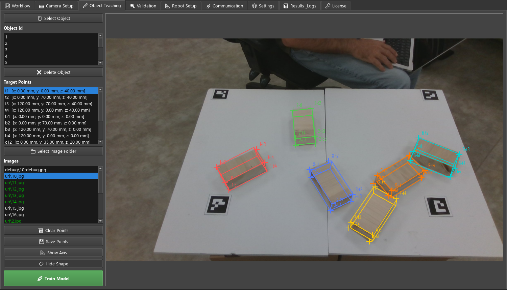
point_faces, projected with the computed pose.Training
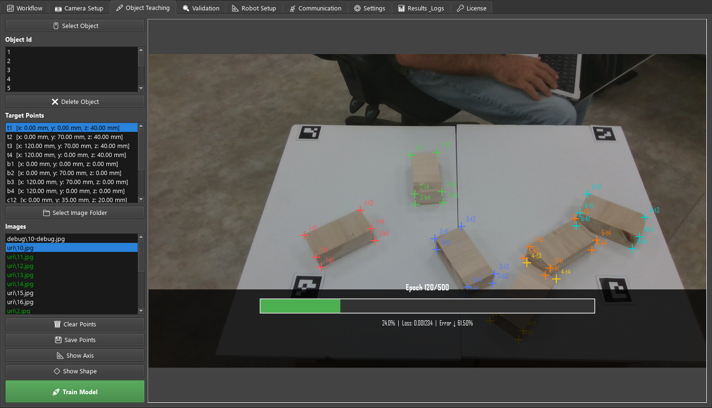
- With the labeled object selected, click 🚀 Train Model.
- If the object has no model yet, confirm No Model Found → start training?. If a model exists, Model Exists → retrain it? continues from the latest checkpoint instead of starting over.
- Training runs in the background; the app stays usable. The button reads 🛑 Stop Training.
- To stop early, click it again. You are asked whether to save the model at the current epoch (Save Partial Model).
| Setting | Where | Default | Meaning |
|---|---|---|---|
| Epochs | detection_parameters.n_epochs | 100 | Passes over the training images, for a new run and for each retrain |
| Learning rate | detection_parameters.lr | 0.0001 | Step size of the optimiser. Leave it unless training diverges. |
| Image scale | detection_parameters.image_scale | 0.5 | Images are scaled by this before entering the network. Smaller is faster but loses small details. |
| Train split | detection_parameters.train_split | 0.95 | Fraction of labeled images used for training; the rest for validation. |
n_epochs and lr are not in a new object_config.json; add them to detection_parameters
(Settings tab or a text editor) to change them. Checkpoints are written to models\keypoint_group_model_NNNN.pth.
🔍 Validation
Runs the trained model and shows the detected poses. It can also publish every result to the robot.
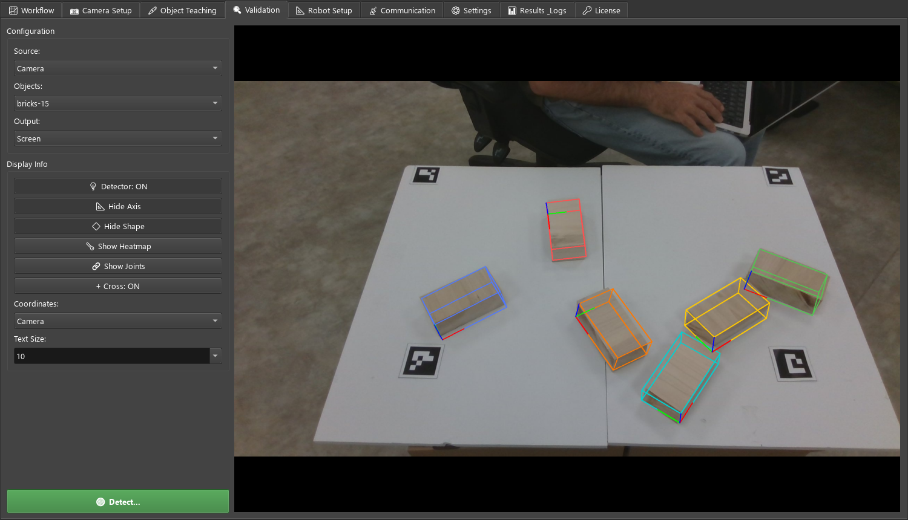
Configuration
| Control | Values | What it does |
|---|---|---|
| Source | Camera Image Directory Video File Video Stream | Where the images come from. See the table below. |
| Objects | objects in the objects directory | Object (and its model) to detect. Selecting one loads it. |
| Output | Screen MP4 File TCP/IP Stream ROS Topic MQTT | Screen: display only. TCP/IP Stream: also
computes the poses of every frame and publishes them to the robot server, starting it if needed (see Communication).
MP4 File, ROS Topic and MQTT are not implemented yet and behave like Screen. |
| Source | Behaviour after 🟢 Detect… |
|---|---|
| Camera | Connects the object's camera (or reuses the Camera Setup connection) and detects on the live image until 🔴 Stop Detection. |
| Image | Asks for one image file, detects once and shows the result. |
| Directory | Asks for a folder and goes through all its images (.png .jpg .jpeg .bmp) in name order, over and over until you press Stop.
Stops by itself if none of the files can be read. |
| Video File | Asks for an .mp4 / .avi and plays it at its frame rate, detecting every frame, until the end or Stop. |
| Video Stream | Not implemented yet. |
Display Info
| Control | What it does |
|---|---|
| 💡 Detector: ON/OFF | Main switch for detection on screen. With it off you see the plain image. (TCP/IP output still detects.) |
| 📐 Show Axis | Pose axis per detected instance: X red, Y green, Z blue, at the object origin. |
| 🔷 Show Shape | Object face outlines (point_faces) projected with the detected pose. |
| 🌡️ Show Heatmap | Raw network output: where the model believes each keypoint is. For diagnosing weak detection. Hidden in the deployed app. |
| 🔗 Show Joints | Detected keypoints and how they were grouped into instances. Hidden in the deployed app. |
| + Cross: ON/OFF | Crosshair at the image centre, for aligning the camera. |
| Coordinates | Camera · Object · Robot. Frame for displayed poses. Not applied yet: poses are always in camera coordinates. |
| Text Size | 10 · 20 · 50. See known limitations: this field currently changes the camera exposure. |
Sending results to the robot
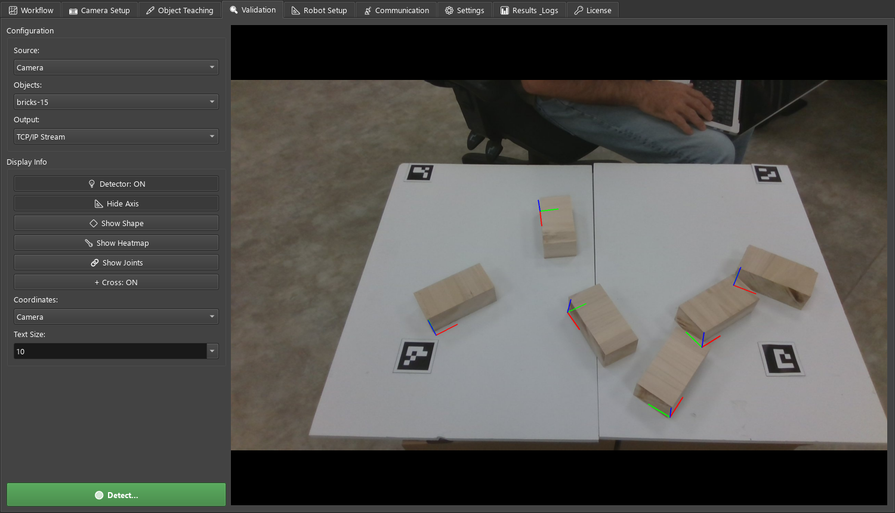
Set Output = TCP/IP Stream and start detection. For every frame, the model runs once and the same result
is drawn on screen and stored in the robot server. Each time the robot asks (get results) it receives the
newest result. The server keeps running when you stop detection or switch the output back; stop it from the
Communication tab.
📐 Robot Setup
Hand-eye calibration: finds the camera's position on the robot flange from images of a chessboard taken at known robot poses.
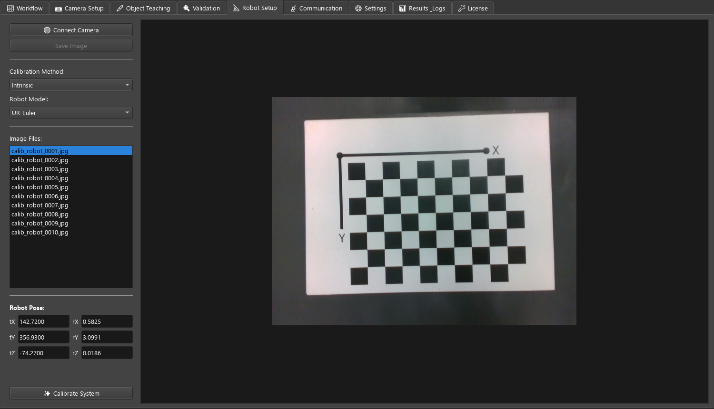
| Control | What it does |
|---|---|
| 🟢 Connect Camera | Live view from the camera; enables Save Image. |
| Save Image | Saves the current frame as capture_N.jpg (in the folder pose6d was started from) and adds it to the list. |
| Calibration Method | Intrinsic · Extrinsic · Hand-Eye. Currently not used: Calibrate System always runs hand-eye calibration. |
| Robot Model | How the three rotation values of a robot pose are read. UR-Euler: Euler angles, R = Rz·Ry·Rx (degrees
if any value is above 2π, otherwise radians). All others (UR-RVEC, KUKA, DENSO, ABB, TM, NEURA, DOBOT): rotation vector in radians. |
| Image Files | Images in data\robot_calibration\. Selecting one shows it and fills Robot Pose from the dataset file. |
| Robot Pose tX tY tZ / rX rY rZ | Robot flange pose when the selected image was taken (translation in mm, rotation per Robot Model). Display only. |
| ✨ Calibrate System | Runs the calibration on the whole dataset (OpenCV calibrateHandEye, Tsai method). |
Calibration dataset
The images and camera_robot_calibration.json must be in data\robot_calibration\:
{
"chessBoardSize": [9, 6], // inner corners (columns, rows)
"chessBoardSquareSize": 10.0, // mm
"viewInfo": [
{ "imageName": "calib_robot_0001.jpg",
"robotPose": [142.72, 356.93, -74.27, 0.5825, 3.0991, 0.0186] }, // x y z (mm), r1 r2 r3
...
]
}At least 3 images with a detected chessboard are required; 10–15 views with large rotations between them give a stable result.
R_cam2gripper / translation t_cam2gripper) is currently only printed to the console window. It is not shown in the tab or saved.📡 Communication
Runs the pose server the robot connects to, and a test client that behaves like a robot. Both monitors show every packet the server receives and sends.
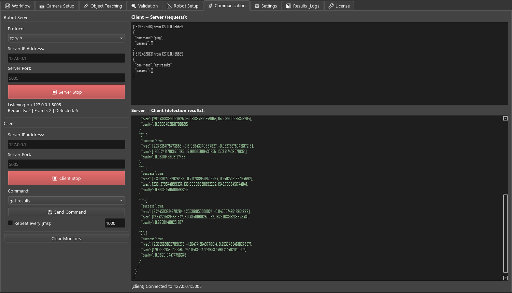
Robot Server
| Control | Default | What it does |
|---|---|---|
| Protocol | TCP/IP | Only TCP/IP is available. |
| Server IP Address | 127.0.0.1 | Address the server listens on. Use the PC's network address (or 0.0.0.0 for all) when the robot is a different machine. |
| Server Port | 5005 | TCP port, 1–65535. |
| ▶ Server Start / ⏹ Server Stop | Starts or stops the server. The server may also have been started by Validation with Output = TCP/IP Stream; the button follows its real state. | |
| Status line | Listening address, number of requests answered, latest frame number and number of detected objects. |
"success": false, "message": "No results yet".Client
| Control | What it does |
|---|---|
| Server IP Address / Port | Server to connect to: this app's server, or any other pose6d server. |
| ▶ Client Start / ⏹ Client Stop | Connects (3 s timeout) or disconnects. |
| Command | get results or ping. |
| 📤 Send Command | Sends the command once. |
| Repeat every [ms] | Sends the command repeatedly at this period (minimum 50 ms). While the model runs on the GUI thread the real rate is at most one request per detected frame. |
| Clear Monitors | Empties both monitors (each keeps at most 3000 lines). |
Protocol reference
Each message is a 4-byte big-endian length followed by that many bytes of UTF-8 JSON. The client sends a request and the server answers on the same connection, any number of times.
| Request | Response result |
|---|---|
{"command": "get results", "params": {}} | Latest detection, see below |
{"command": "ping", "params": {}} | {"success": true, "message": "pong"} |
| anything else | {"success": false, "message": "Unknown command: …"} |
{ "status": "ok", "command": "get results",
"result": {
"success": true,
"frame_id": 128, // increases by 1 per processed frame
"timestamp": 1793190045.698, // seconds since 1970 when the frame was processed
"objects": {
"1": { "success": true,
"rvec": [2.2796, -0.6202, -0.0567], // rotation vector, radians
"tvec": [-206.12, 118.24, 1553.01], // translation, mm, camera frame
"quality": 0.9798 },
"2": { "success": false, "rvec": null, "tvec": null, "quality": 0.0 }
} } }| Field | Meaning |
|---|---|
status | ok, or error with a message if the server failed to handle the request |
frame_id | Same number in two answers means no new frame was processed in between |
objects | One entry per detected instance, keyed by instance number |
success (object) | false when too few keypoints were found to compute a pose; skip that entry |
rvec / tvec | Object pose in the camera frame (see concepts). Convert with the hand-eye result for robot coordinates. |
quality | 0–1 fit score; reject low values (for example below 0.9) in the robot program |
A minimal robot-side client in Python:
import json, socket, struct
def request(sock, command):
payload = json.dumps({"command": command, "params": {}}).encode()
sock.sendall(struct.pack(">I", len(payload)) + payload)
size = struct.unpack(">I", sock.recv(4, socket.MSG_WAITALL))[0]
return json.loads(sock.recv(size, socket.MSG_WAITALL))
with socket.create_connection(("127.0.0.1", 5005)) as s:
result = request(s, "get results")["result"]
for obj_id, obj in result["objects"].items():
if obj["success"] and obj["quality"] > 0.9:
print(obj_id, obj["tvec"], obj["rvec"])⚙️ Settings
A form for the active object's object_config.json. The object path is shown at the top; the form reloads
when you switch objects.
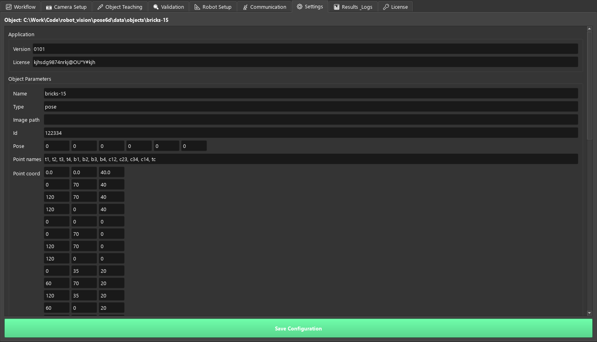
| Field type | How to edit |
|---|---|
| Number / text | Type directly. Check boxes for true/false values. |
| Short list or matrix | One box per value (e.g. pose, point_coord, intrinsic_matrix). |
| List of names | Comma-separated, e.g. t1, t2, t3. |
| Nested list | Raw JSON, e.g. [["t1","t2","t3","t4"],["b1","b2","b3","b4"]]. Hover for a hint. |
Save Configuration checks the values first and saves only if all checks pass:
point_namesandpoint_coordhave the same number of entries, and every coordinate is[x, y, z];- every name in
point_facesexists inpoint_names; - every
resolutionis[width, height]; intrinsic_matrixis 3×3.
object_config.json reference
object_parameters
| Key | Example | Meaning |
|---|---|---|
name | bricks-15 | Object name (the folder name) |
type | pose | Object model type, see Object Type |
point_names | t1 … tc | Keypoint names, in the order the network learns them |
point_coord | [[0,0,40], [0,70,40], …] | 3D position of each keypoint in mm, same order as point_names. Defines the object frame: the pose axis is drawn at (0, 0, 0). |
point_faces | [["t1","t2","t3","t4"], …] | Closed outlines drawn by Show Shape |
resolution | [1920, 1080] | Image size of the training images |
id, pose, image_path | Bookkeeping; not needed for detection |
camera_parameters
| Key | Example | Meaning |
|---|---|---|
camera_type | WEBCAM0 | Camera driver, see Camera Type |
cameraid | 0 | Device index for webcams. If that index fails, the first working camera (0–3) is used. |
resolution | [640, 480] | Capture size requested from the camera |
mode | rgb | Stream shown: rgb, irl/irr (left/right IR), dep (depth), rgd, lrd, rgbd |
intrinsic_matrix | [[2700,0,960],[0,2700,540],[0,0,1]] | Focal lengths and image centre in pixels. Replaced by camera calibration. |
intrinsic_distortion | [[0,0,0,0,0]] | Lens distortion k1 k2 p1 p2 k3 |
exposure, gain, focus, format, crop_box, rotation_type | Stored camera settings; exposure is set from Camera Setup |
detection_parameters
| Key | Default | Meaning |
|---|---|---|
image_scale | 0.5 | Scale applied to images before the network, for training and detection |
train_split | 0.95 | Fraction of labeled images used for training |
n_epochs | 100 | Training epochs (add the key to change it) |
lr | 0.0001 | Learning rate (add the key to change it) |
net_name, net_path, gain, augment_type, resolution | Kept for compatibility; not used by the keypoint model |
application and measurement_parameters are kept for compatibility and do not affect detection.
Camera calibration also adds camera_matrix and camera_distortion at the top level.
📊 Results & Logs
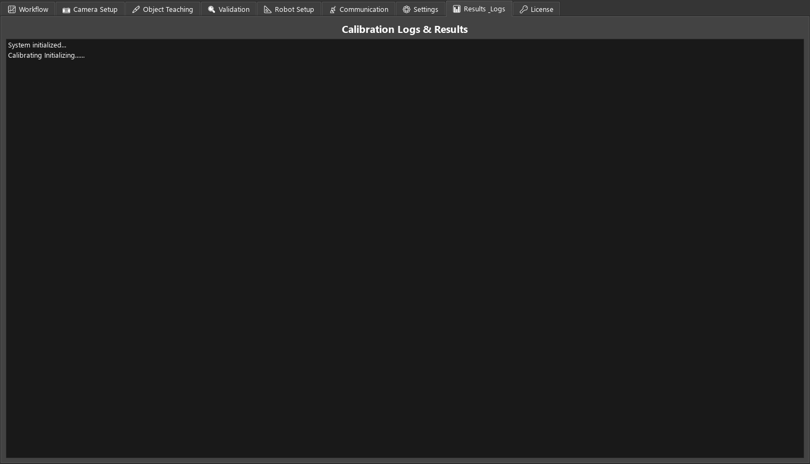
A placeholder list for calibration and run results; it currently only shows System initialized…. The application log
is in the console window when running from source, and in logs\pose6d.log in the deployed app
(see source vs deployed).
🔑 License
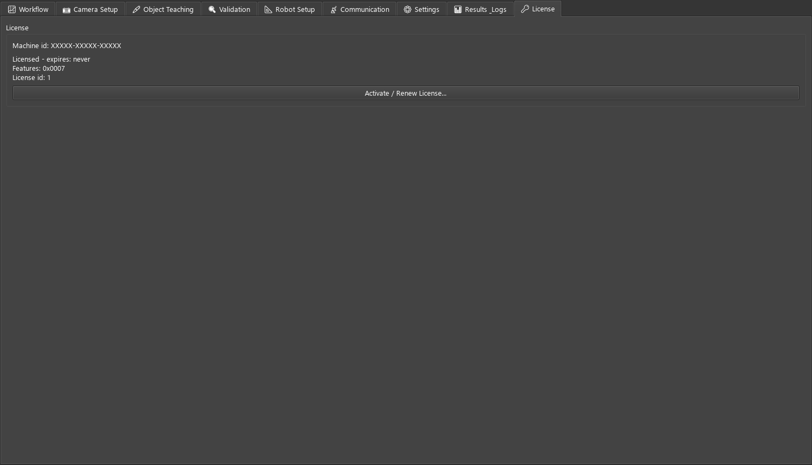
pose6d uses an offline license locked to the machine. No network connection is needed.
| Item | Meaning |
|---|---|
| Machine id | Identifies this PC. The license only works on the machine it was issued for. |
| Status | Licensed - expires: <date or never>, or why it is not valid: not activated, invalid format/signature, wrong machine, expired, clock rollback detected |
| Features | Bitmask of licensed functions, see below |
| Activate / Renew License… | Opens the activation dialog |
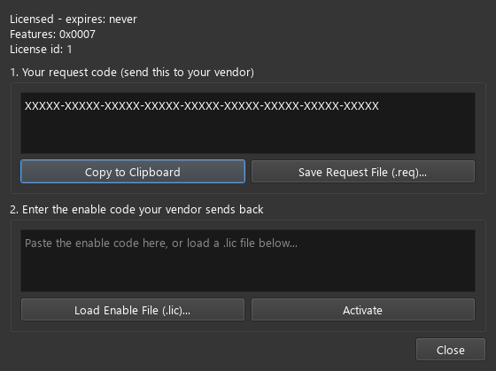
- Under 1. Your request code, click Copy to Clipboard or Save Request File (.req)… and send it to your vendor.
- Paste the enable code you receive under 2., or click Load Enable File (.lic)….
- Click Activate. The license is saved as
pose6d_license.licin the folder pose6d is started from (for the exe, also looked up next topose6d.exe).
| Feature bit | Function |
|---|---|
0x0001 | Detection display |
0x0002 | Training |
0x0004 | Robot communication. Without it, communication works for a 1-hour grace period, then the Communication tab is disabled. |
0x0008 | Labeling |
Vendors issue licenses offline with vendor_tools/issue_license.py (see docs/getting-started/licensing.md).
Worked examples
1 · Teach a new object from scratch
- Workflow → Create New…: name the object, for example
bracket-01. - Settings: replace the placeholder cube with the real keypoints:
point_names,point_coord(mm, measured from a corner you choose as origin) andpoint_faces. Save Configuration. - Camera Setup: connect the camera and calibrate it with 15–25 chessboard images.
- Camera Setup: Save Image 15–20 varied views of one or more parts.
- Object Teaching: label every visible part (one Object Id per part), Save Points per image, and check with Show Axis.
- Object Teaching → Train Model. When it finishes, test in Validation with Source = Directory on the same images, then with Source = Camera.
- Where detection is weak, capture and label more images of those situations and click Train Model again (retrain continues from the last checkpoint).
2 · Soak-test detection on a folder
Validation → Source = Directory, Detector ON, Show Axis ON → Detect… → choose the folder. The images repeat until you press Stop. Use it
to watch for unstable or missing detections over many cycles without a camera.
3 · Stream poses to a robot
- Validation: Source = Camera, Output =
TCP/IP Stream, Detect…. The server starts on127.0.0.1:5005. - For a robot on another machine: stop detection, set the server address in Communication (the PC's network IP), Server Start, then start detection again.
- Check with the built-in client: Communication → Client Start, Command =
get results, Repeat every 1000 ms. Results appear in the lower monitor. - Program the robot to send
get resultswhenever it is ready to pick (see protocol), and to skip objects withsuccess: falseor lowquality.
4 · Hand-eye calibration
- Fix the chessboard in the cell. Move the robot (camera on the flange) to 10–15 different poses that look at the board from different angles.
- At each pose save an image into
data\robot_calibration\and write its file name and robot pose intocamera_robot_calibration.json. - Robot Setup: choose the Robot Model that matches how your controller reports rotations, check a few images (the pose fields show what was read), then Calibrate System.
- Read the result in the console. A camera RMS error under 1 px indicates good images.
Troubleshooting
| Symptom | Likely cause → fix |
|---|---|
| Camera connects but the image stays black / "Failed to acquire an image" | Some Windows camera drivers open the camera but never deliver frames through the default
backend. pose6d tests for this and retries with DirectShow automatically; if it still fails, close other programs using the camera and try another cameraid. |
| Nothing is detected | Detector OFF; wrong object selected; object partly outside the image; model trained on too few or too different images. Turn on Show Heatmap (source mode) to see whether the model finds keypoints at all. |
| Some instances have no axis | Fewer than 4 keypoints were found for them (log: Object N has K keypoints (need >= 4)). Add training images with similar views or occlusions. |
| Axes are drawn but in the wrong place | Camera not calibrated, or calibrated at another resolution; wrong point_coord. Recalibrate and check Show Shape in Object Teaching. |
| Show Axis draws nothing in Object Teaching | Under 4 labeled points, or reprojection error above 5 px: a point is labeled with the wrong name or the 3D coordinates are wrong. |
| Server does not start (port in use?) | Another program, or a second pose6d, is using the port. Choose another port or close the other program. |
Client receives the same frame_id every time | Detection is not running, or Output is not TCP/IP Stream. |
| Communication tab is greyed out | No license with the robot-communication feature and the 1-hour grace period has ended. Activate a license with feature 0x0004. |
| Settings: Validation Error | The message lists the rule that failed (see Settings), most often point_names and point_coord with different counts. |
| Training is very slow | Training runs on the CPU without a CUDA build of PyTorch. Install the CUDA build, or lower image_scale. |
Appendix A · Files written by pose6d
| File | Written by | Content |
|---|---|---|
<object>\object_config.json | Create New, Settings, Object Type, camera calibration, point editing | Object definition and settings |
<object>\images\<format>_<time>.png | Camera Setup → Save Image | Captured images |
<object>\images\<image>.json | Object Teaching → Save Points | {"points": [{"label", "object_id", "image_x", "image_y"}, …]} |
<object>\models\keypoint_group_model_NNNN.pth | Training | Model checkpoint after epoch NNNN |
<object>\cameras\calibration.json | Camera Setup → Calibrate | camera_matrix, dist_coeffs |
main_app_config.json | Most tabs | Session: last object, camera/robot/communication defaults |
pose6d_license.lic | License activation | Enable code |
logs\pose6d.log | Deployed app | Application log, rotated at 5 MB |
Appendix B · Known limitations
Behaviour of the current version (v01.06) that differs from what the controls suggest:
| Where | Limitation |
|---|---|
| Validation → Text Size | Changing it sets the camera exposure to the typed value instead of the text size. |
| Validation → Coordinates | No effect; poses are always in camera coordinates. |
| Validation → Output | MP4 File, ROS Topic and MQTT are not implemented. Source Video Stream is not implemented. |
| Robot Setup | Calibration Method is ignored; the hand-eye result is only printed to the console and not saved. |
| Workflow → Select Multiple | Opens the Create New Object dialog. |
| Workflow → Camera Type | Sets the session default; the camera actually used comes from the object (Camera Setup). |
| Workflow → Test Connection | MODBUS is not tested and always reports failure. |
| Camera Setup → Load Init File | Opens a file dialog only. |
| Object Teaching | Keypoints cannot be added or removed from the tab; edit point_names / point_coord in Settings. |
| Results & Logs | Placeholder; the tab title is shown as "Results _Logs". |